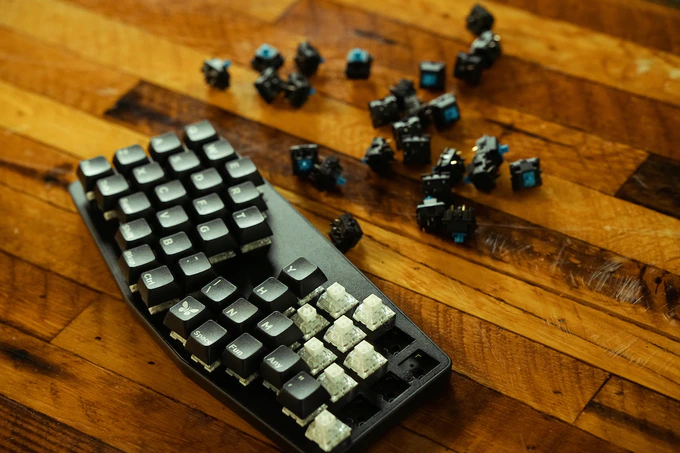
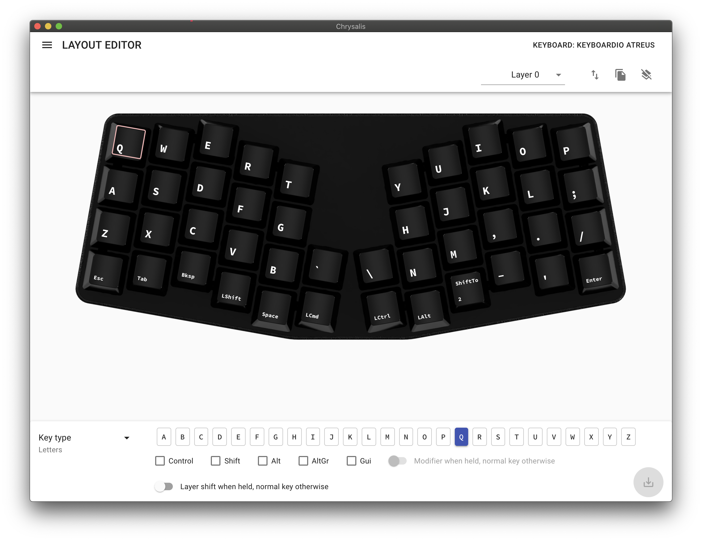

Keyboardio Atreus Review
I recently received my early bird Keybardio Atreus Promotional photo courtesy of Keyboardio
from the Kickstarter and have now been using it for about three weeks, so I am writing a review for folks considering buying one after release.
A Bit of History
Most of this is also outlined on the Atreus website, but here is the short version: my colleague Phil Hagelberg designed the original Atreus keyboard in 2014, and has been selling kits for self-assembly ever since.
In 2019 Keyboardio, the company which created the Model 01, got together with Phil to build a pre-assembled commercial version of the Atreus. Their Kickstarter ran earlier in 2020 and collected almost $400k.
Phil’s original 42-key version can be built with either a PCB or completely hand-wired, and uses a wooden, acrylic, or completely custom (e.g. 3D-printed) case.
Keyboardio split the two larger thumb keys into two regular size keys, bringing the total up to 44, and uses a PCB and Cherry MX-style switches mounted on an Aluminium plate inside a black ABS case.
Hardware
At a first impression, it is incredibly smallDimensions taking from the product page: 24.3 × 10 × 2.8cm, 310g.
, noticeably smaller still than the small Apple Magic Keyboard. At the same time, it uses a regular key spacing, so once your hands are in place it does not feel cramped at all. On the contrary, every time I use a different keyboard now, I feel that half the keys are too far away to reach comfortably. It is also flat enough that I can use it without a wrist rest.
Mine has Kailh Speed Copper switches, which require 40g of force to actuate, with very early actuation points. They are somewhat comparable to Cherry MX Browns without the dead travel before the tactile bump. As mentioned above, the switches are mounted on an aluminium plate, and can be swapped without disassembly.
The early actuation point of the switches does require some getting used to, I keep experiencing some key chatter, especially on my weaker fingers, though Jesse from Keyboardio is working hard on alleviating that.
When it comes to noise, you can hear that it is a mechanical keyboard. Even with relatively quiet switches, the open construction means that the sound of the keys getting released is audible in most environments. I would hesitate to bring it to a public space, like a café or a co-working space. Open-office depends on the general noise level, and how tolerant your coworkers are, I have not had anyone complain about the sound level in video conferences.
The keycaps used are XDA-profileSymmetrical and the same height across the keyboard, like lower profile SDA. That means you can rearrange them between rows.
laser-engraved PBT of medium thickness. Apparently there have been a lot of issues with the durability of the labels, so the specifics of that might change. I personally have had a single key start to fade a bit over 3 weeks of use, but I do not actually care.
The keyboard is powered by the ATmega32U4, which is a pretty standard controller for a keyboard, it is also used in the Teensy 2.0 for example.
I would judge the overall build quality as good. While it does not feel like an ultra-premium product, there is nothing specific I can actually complain about, no rough edges or manufacturing artefacts.
Software
Out of the box, the keyboard uses the open-source Kaleidoscope firmware, which can be configured with the (also open-source) Chrysalis graphical configurator. Chrysalis with my Layer 0
Supposedly it is also possible to use QMK, and Phil has recently written Menelaus, a firmware in Microscheme.
I have stuck with (pre-release versions of) Kaleidoscope so far, which has worked out fairly well. Chrysalis is an Electron app, and doing sweeping changes in it can be a bit cumbersome compared to using text-based, declarative configuration, but it does the job. Flashing a new version onto the keyboard only takes a few seconds. I also have to mention the extensive documentation available. Kaleidoscope has a rich plugin infrastructure, very little of which I actually use, but it does seem to rival QMK in flexibility.
I am using the Atreus with Colemak, the same layout I have been using for almost a decade now, and compared to trying the Ergodox,When I tried using an Ergodox for the first time, the ortholinear layout really threw me off, and I kept hitting right in between keys.
the switching was much smoother. I am mostly back to my regular typing speed of 80-90 WPM after three weeks, and I can still use a regular staggered layout keyboard without trouble.
The modifier keys at the bottom are unusual, but work for me. I use the three innermost keys with my thumbs, and the bottom edges by just pushing down with my palm. It does require some careful arrangement to avoid often having to press two modifiers on the same time at once.
With only 44 physical keys, the keyboard makes heavy use of layers, which can be temporarily shifted to when holding a key, or switched to permanently. By default the first extra layer has common special characters on the left half, and a numpad on the right, which works better than a regular keyboard for me.
The only problem I sometimes have is the lack of a status indicator. This means I have to keep track of the keyboard state in my head when switching layers. Not a big problem though.
Conclusion
My conclusion is quite simple: if you are in the market for a keyboard like this, this might be the keyboard for you. It does what it does well, and is much cheaper than anything comparable that does not require manual assembly. I personally enjoy the small form factor, the flexible (set of) firmware, and the RSI-friendly layout.
I also want to highlight the truly amazing effort Keyboardio puts into supporting their customers. You can browse the Kickstarter or their GitHub projects to see how much effort they put into this, and I have been in contact with Jesse myself while trying to debug a debouncing issue in the firmware. I am very happy to support them with my wallet.